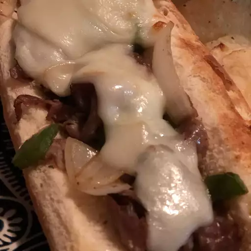

Basic "Cheesesteak"

Description
This simple recipe is one nearly everybody can make. All that limits you is what you have on hand.
Simple. Delicous. Easy.
Whether you're a novice or a professional, this recipe is one you should try this out! While the Philly natives may yell at me about desecrating their dear sandwich, I would love for them to know this:
I don't care.
Ingredients
Quick Note: meat can be changed to your preference. What I'm putting down is only what I used personally.
Seasonings are also not set in stone. They can be changed out for what you want.
Steps
- Place oil into the pan and heat it to medium-high.
- Place peppers and onions into the pan and cook for a few minutes (3 to 5, by my estimate) while seasoning with black pepper and salt.
- Remove peppers and onions from the pan and place them into a bowl. Add a small amount of oil.
- Place meat into the pan, and let it cook for a minute or two.
- Season meat with onion power, garlic powerder, and caramelized onion butter seasoning. This can also work for whatever seasonings you choose.
- Once meat is nearly finished, add the vegetables back to the mixture and cook for about a minute or two.
- Turn off the heat, or place it on low.
- Open the hoagie rolls and place slices of provolone cheese along the inside.
- OPTIONAl: Heat the hoagie rolls until the cheese starts to slightly melt.
- Place the wanted amount of the meat/vegetable mixture onto the hoagie roll on top of the cheese.
- Eat.